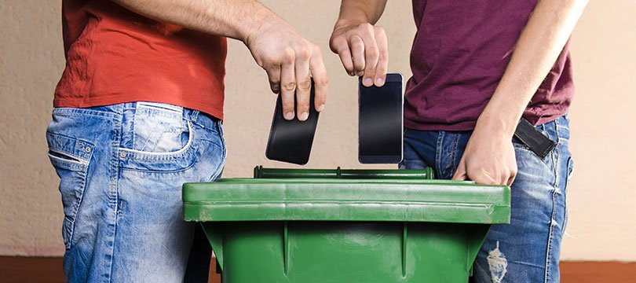
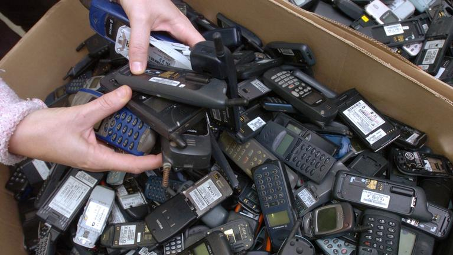
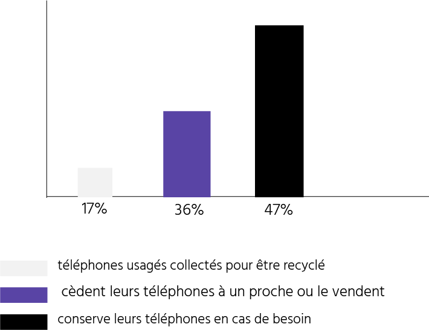
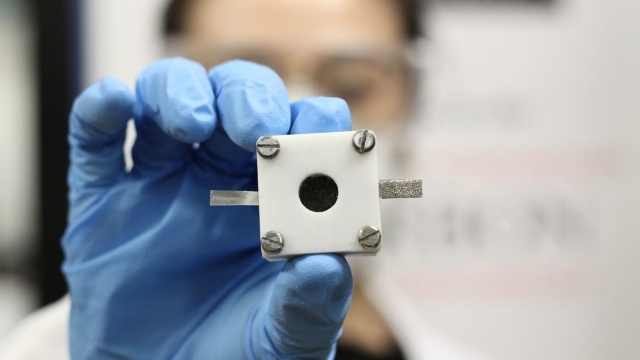

D’après des statistiques du Figaro en 2017, les Français conservent chez eux 100 millions de téléphones usagés. Seulement 17% des téléphones sont recyclés. Le recyclages est pourtant la clef pour freiner les dégâts environnementaux liées à l’extraction du Lithium et à bien d’autres métaux rares. Une personne qui recycle, est un super-héros de l’environnement.
Les Solutions pour tous
Le lithium est un métal dont l’extraction est
très polluante. Lorsque la demande de lithium augmente,
la pollution augmente. La solution première serai de
recycler les produits composé de ce métal.
Logo du recyclage
En effet, il est certes impossible de totalement
stopper l’exploitation du Lithium, mais il est possible de
la freiner.
Pour cela, il faut encourager le recyclage de
ce métal. Bien que certaines entreprises cherchent a crée
un processus de recyclage de produit pour en extraire du
Lithium, ces derniers possèdent très peu de collectes.
De plus, du lithium recyclé serai vendu plus chère que du
lithium directement extrait, soit la demande serai toujours
tourner vers du lithium de bon marchés.

Recyclage de téléphones
Il faudrait donc par exemple favoriser les
collectes de matériaux de chaque individus, n’ayant
plus d’utilité d’un produit contenant du lithium, afin
de recycler ce dernier pour ne pas à avoir a puiser
dans les ressources de la terre.

Smartphone stockés dans les tiroirs
D’après les statistiques du Figaro en 2017
et en France, 100 millions de téléphones usagés et
inutiles sont conservés, et peu recycler.

Si des téléphones mobiles, et autres appareils,
n’étant plus utiles chez le consommateur étaient recyclés,
environ 80 % des matériaux pourraient être récupérer.
Tout type de consommateur de produit électrique peut faire
un geste héroïque, simplement en recyclant son produit
plutôt que de le jeter, ou de le stocker dans un tiroir.
Les Alternatives
Lithium
Le Lithium est l’un des métaux le plus demandé par
les entreprises, car il permet à leur produit d’être plus
puissant. Mais les méthodes d’extraction pour obtenir ce métal
sont très dévastatrices pour l’environnement. Bien que ce
Lithium est utilisé quelque fois pour favoriser le
développement durable, comme la création des véhicules
électriques, ce dernier est tout de même polluant lors
de son extraction. Il faudrai que les entreprise utilisent une
alternative, notamment utilisé les matériaux qui ont été
recyclés, ou d’autre matière dont leurs extraction respectent
l’environnement.
C’est par exemple le cas, des batteries air-zinc,
qui sont plus résistante dans le temps, par rapports au
Lithium-ions. Le seul défaut est sa recharge compliqué et
plus longue. Malgré ça, cette alternative pourrait ralentir
l’extraction dangereuse du Lithium

Batterie zinc-air
Enfin, certains scientifiques recherche un moyen
de crée des batteries ayant une capacité de stockage
énergétique tout en étant rechargeable par l’énergie solaire.
Bien que les prix de ces matériaux seront élevés, cela peut
tout de même limiter les dégâts environnementaux